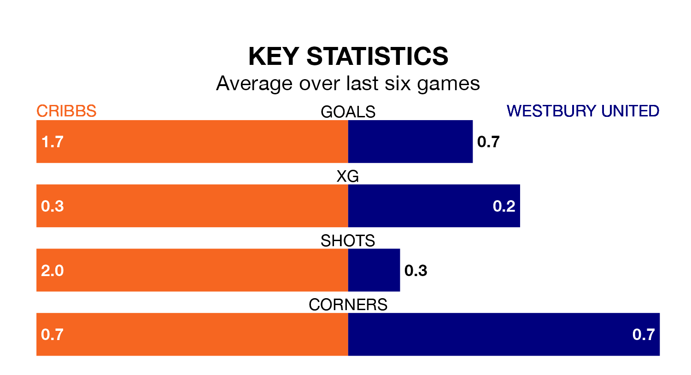

Mid-season relegation candidates Westbury United face a challenge away against high-flying Cribbs on Saturday.
Westbury United are 17th in the Southern League Division One – South table, and have picked up five wins and six draws in their 22 games to date.
Cribbs, meanwhile, are third in the standings with 39 points, having won 11 and drawn six of their first 20 matches, and are one point behind table-toppers Wimborne Town.
With 29 goals in 22 games so far this season, Westbury are scoring at below the league average rate with 1.3 goals per game. And they are conceding more than average, letting in 40 goals at a rate of 1.8 per game.
Cribbs, meanwhile, are above average scorers, with 1.7 goals per game, compared to a league average of 1.6. They have conceded 1.2 goals per game.
The home side are in reasonable form in Southern League Division One South, with three wins and three draws from their last six games.
With a win and two draws over that period, United's form is much worse – they have taken five points from 18, compared to Cribbs's 12.
Cribbs's last match was on January 13, a 1-1 draw against Evesham United.
Westbury drew 0-0 with Willand Rovers last time out, also on January 13.
Updated: 08:51 (UTC), 25/01/24